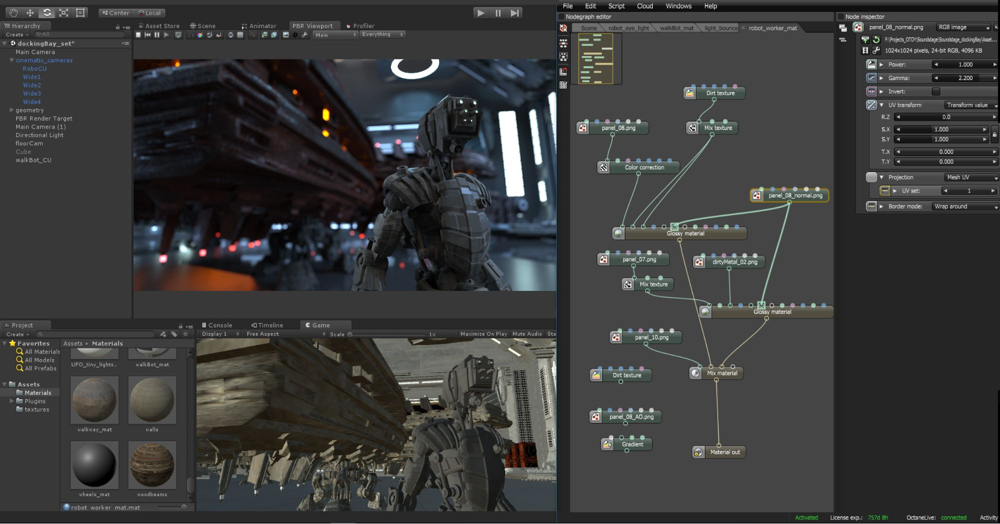

Что такое Unity?
Что представляет собой Unity?
Unity – больше, чем движок, это среда для разработки компьютерных игр, в которой объединены различные программные средства, используемые при создании ПО – текстовый редактор, компилятор, отладчик и так далее. При этом, благодаря удобству использования, Unity делает создание игр максимально простым и комфортным, а мультиплатформенность движка позволяет игроделам охватить как можно большее количество игровых платформ и операционных систем.
Чем хорош Unity?
В первую очередь, как мы уже упоминали, движок Unity3D дает возможность разрабатывать игры, не требуя для этого каких-то особых знаний. Здесь используется компонентно-ориентированный подход, в рамках которого разработчик создает объекты (например, главного героя) и к ним добавляет различные компоненты (например, визуальное отображение персонажа и способы управления им). Благодаря удобному Drag & Drop интерфейсу и функциональному графическому редактору движок позволяет рисовать карты и расставлять объекты в реальном времени и сразу же тестировать получившийся результат
Второе преимущество движка – наличие огромной библиотеки ассетов и плагинов, с помощью которых можно значительно ускорить процесс разработки игры. Их можно импортировать и экспортировать, добавлять в игру целые заготовки – уровни, врагов, паттерны поведения ИИ и так далее. Никакой возни с программированием
Многие ассеты доступны бесплатно, другие предлагаются за небольшую сумму, и при желании можно создавать собственный контент, публиковать его в Unity Asset Store и получать от этого прибыль.
Третья сильная сторона Unity 3D – поддержка огромного количества платформ, технологий, API. Созданные на движке игры можно легко портировать между ОС Windows, Linux, OS X, Android, iOS, на консоли семейств PlayStation, Xbox, Nintendo, на VR- и AR-устройства.
Unity поддерживает DirectX и OpenGL, работает со всеми современными эффектами рендеринга, включая новейшую технологию трассировки лучей в реальном времени